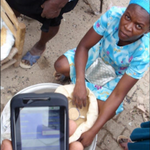
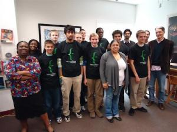
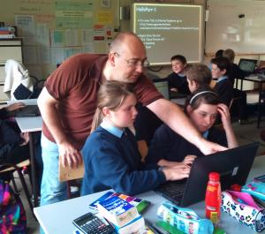

Stories
See some of the amazing things that people are doing with App Inventor in the stories below.
Draughts Game virtual reality with App Inventor |
 The Draughts (Checkers) Game is an augmented reality game built with App Inventor. Players use their phones to choose their team and starting position on the board, then they move around like human checker pieces on a large outdoor field. The game tracks movements using GPS, showing the location of each checker on the virtual board depicted on the players' screens. |
My Droid Robot controlled by App Inventor |
 This "DroidBot" Android Robot is driven by Arduino components and controlled over BlueTooth by a mobile phone app developed with App Inventor. Marcelo Ávila de Oliveira, shared this charming video of the DroidBot responding to commands from the phone, set to the music "I Can Read Your Mind." |
Technovation Challenge Winning App, I.O.U, now available on Google Play |
I.O.U was created by the Sparkling APPles team from Mountain View, California as part of the Technovation Challenge. Since most of the girls have no experience coding, they build their apps using App Inventor. "Because we needed to put together an app in such a short amount of time, App Inventor was a great program since it allowed us to fully understand programming concepts without requiring us to learn a programming language. With its intuitive functions and user interface, our group successfully created an app in under ten weeks!" stated Diana Gong. |
Mobile Apps Course draws 50% women, attracts new CS majors |
 The University of San Francisco's App Inventor course attracts nontechnical students and has encouraged women to consider majoring in computer science. Business Week ran this video story featuring students Kelly Lazzara and Andrea Conway, and their professor David Wolber, speaking about how the course opens up the field of computer science in an approachable, fun, and engaging way by allowing them to quickly build apps for real-world purposes. |
DroidBall: Intelligent Systems two-day camp takes students from beginner to robot programmer |
 Monash University Sunway Campus School of IT held an Open Day event called “Intelligent System Boot Camp 2011” to engage the younger generation of Malaysian students to get involved in Intelligent System development. The workshop teaches young students to use LEGO NXT robots with App Inventor technology as the controller of the robot. |
App Inventor in Taiwan |
 The CAVE Education Group promotes robotics education in Taiwan. Their website http://www.appinventor.tw/ hosts many App Inventor lessons, particularly ones involving the LEGO® MINDSTORMS® components. In May 2012, the CAVE Education Groupreleased a book in Mandarin Chinese so that App Inventor users around the world would be able to follow tutorials and program apps for themselves. |
United States Marines use App Inventor in the Field |
 Chris Metzger, United States Marine Corps Staff Sergeant, has used App Inventor to create an app that helps other Marines destroy weaponry captured in the field. In his words, he is “creating an app that calculates net explosive weights so that [his] fellow Marines can utilize it in country to destroy explosives and ammunition, and do it safely.” This striking example of personal use of App Inventor shows how mobilizing and empowering it is for anybody to be able to create an app easily and quickly. |
Mobile Apps for Non-CS Majors at USF |
 At the University of San Francisco, App Inventor is taught as a core curriculum course to non-computer-science majors. Many of the students take the course because they hate Math and the course covers this dreaded requirement. |
Apps for Haiti |
 App Inventor came to the rescue when humanitarian aid workers in Haiti needed a way to track data in the field. Two apps, one to track rainfall and one to track commodities, were developed during the Humanitarian FOSS Project's Rhok (Random Hacks of Kindness) weekend. The Haiti Commodity App tracks commodity prices collected from various locations within the markets. The Haiti Rain Check app collects and records rainfall data from rain gauges scattered around Haiti. View this short video clip to get a sense of the power of App Inventor to help with real-world problems. |
Award-winning Wild Hog Tracker |
Lawrence County High School students in Alabama developed a simple app to document hog sightings. The data collected in the field will aid scientists in understanding the problem of invasive feral hogs. The app earned third place in the Samsung Solve for Tomorrow Contest, winning $100,000 in tech prizes for our school. The contest required the students to select an environmental problem in our local area and use STEM to work toward a solution. |
I'll Write That App for You |
 My name is Pauline Lake and I am one of two Trinity College students whom was chosen to work with Trinity College's Humanitarian Free Open Source Software (HFOSS) during the summer of 2010. That summer I worked with another Trinity College student and two high school teachers to learn and evaluate App Inventor’s potential in K-12 education. I am a firm believer of hands-on education and using things that students are interested in, to motivate them to want to learn. |
Teaching Mobile App Design with App Inventor at Boise State University |
 At Boise State University, we offered an online workshop in summer 2011 and an online graduate course in fall 2011 on mobile app design for teaching and learning using App Inventor. The workshop was offered through Extended Studies, and the course was offered through Department of Educational Technology. Similar to much of the wonderful effort on AI for education around the globe, we have interesting curriculum and excited students. |
Teacher Stories: University of San Francisco |
Dave Wolber, professor at the University of San Francisco, talks about how the use of App Inventor in his CS0 course has changed the way his non-CS major students view computer science and technology. |
Teacher Stories: Youth Radio Mobile Action Lab |
 Elizabeth Soep from Youth Radio talks about how her students learn to become creators of technology platforms that distribute media stories. |
Teacher Stories: Novel Approaches to CS0, Mills College |
 Ellen Spertus, professor at Mills College, discusses how she used App Inventor to teach CS0. |
Teacher Stories: Youth App Lab, Uplift Inc. |
Leshell Hately talks about how she uses App Inventor to introduce computer science to African American youth from Washington DC. |
Teaching Teachers About Mobile Technology |
 Lesley University (Cambridge, MA) offers a master's degree for K-12 teachers in Technology in Education. As part of the program we believe that teachers should not only to learn about the latest technologies, but also have the opportunity to learn about programming. In the past we have offered an elective course in programming using Logo. When I learned about Google App Inventor (AI) it occurred to me that we could offer a course in Mobile Technologies and include programming apps as part of the course. I plunged into Inventor and was delighted. |
Relevant and Real World Computing in the UK |
 In August 2011, the Royal Society of Edinburgh and the British Computer Society asked Jeremy Scott to exemplify the teaching of Computing Science to Scotland’s junior high school students. Here’s his App Inventor story… For over twenty years, desktop operating systems were the basis of most students’ experience of Computing. Today’s learners have a different experience of Computing: it’s on-line, social and increasingly mobile. Computing devices have become more tactile and personal, the result of convergence of numerous technologies from multi-touch to motion-sensing and GPS. |
Introducing Kids to Cutting Edge Technologies |
 Late in the 2010-2011 school year my principal approached me about taking on a new class the following school year. His idea was to create a course that would provide our students with the chance to experience cutting edge technologies. I agreed to teach the course, and embarked on my search for technologies for students to use and learn. |
A Young Adult's Reflections on App Inventor |
 Ever try teaching computer science to a group of teenagers right after they get out of a long day at school? I would expect it to be remarkably difficult and frustrating. But that’s just what I did last week, and it was great. When I enrolled at Youth Radio three years ago as a 16-year-old interested in journalism, I had no idea that pretty soon I’d be teaching fellow teenagers how to create mobile apps. Lucky for us at the Youth Radio’s Mobile Action Lab, we have been able to use an amazing tool to get these students excited and focused. We host week-long App Inventor Workshops, to get hands-on experiences with mobile app development, and hopefully to spark an interest in computer science. |
An App for Women's Health |
 I have been a women’s health Nurse Practitioner for 23 years. As part of my doctoral capstone project at Regis College I decided to develop a mobile app to educate women about the Pap test. Working closely with Professor Ralph Morelli at Trinity College, we met weekly for several months to build this app using App Inventor for Android. |
After School with App Inventor in Ireland |
 Last May I started playing around with the idea of doing some sessions on Google App Inventor in my kids' Primary (K-12) School. I'd had great success trying it out with three of my own kids aged 12 to 7. |